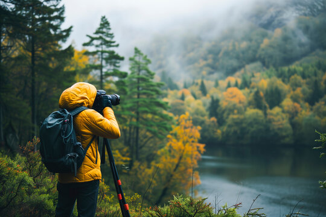
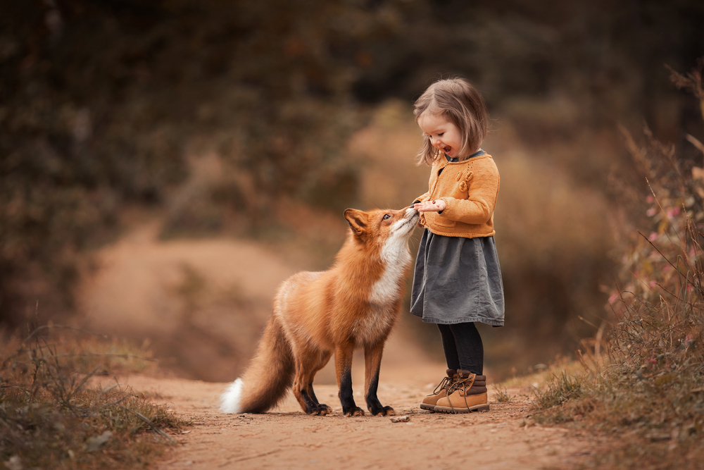

At wildlifepk, we believe that photography is a powerful medium for raising awareness about Pakistan's rich wildlife. Our mission is to showcase the diverse flora and fauna through the lens of passionate photographers. By sharing these images, we aim to educate the public and inspire a collective effort toward wildlife conservation.
Building a Community

We are dedicated to creating a vibrant community of wildlife enthusiasts and photographers. Our platform allows individuals to upload their own photographs, facilitating a shared love for nature and encouraging interaction among like-minded individuals. Together, we strive to foster a sense of responsibility toward preserving our natural heritage.
Inspiring Future Generations

Our vision extends beyond the present; we aspire to inspire future generations to appreciate and protect wildlife. By promoting wildlife photography, we hope to ignite a passion for nature in young minds, encouraging them to explore, capture, and advocate for the beauty of Pakistan's ecosystems. Our future initiatives will focus on educational outreach and workshops.